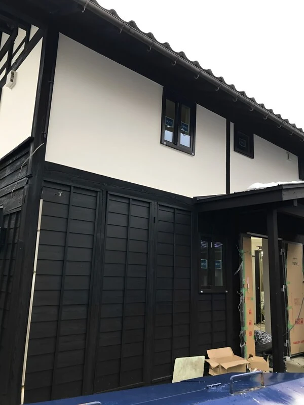
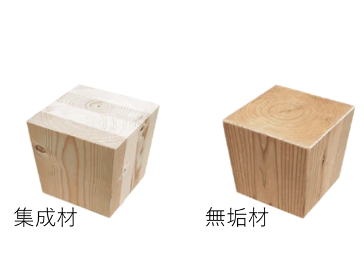
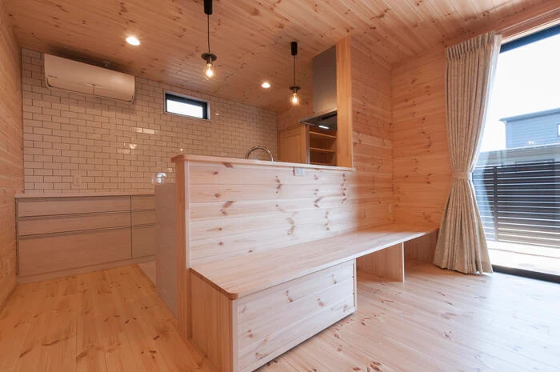
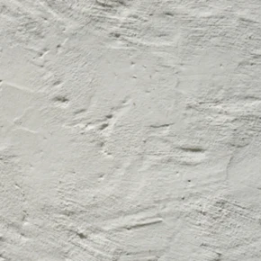
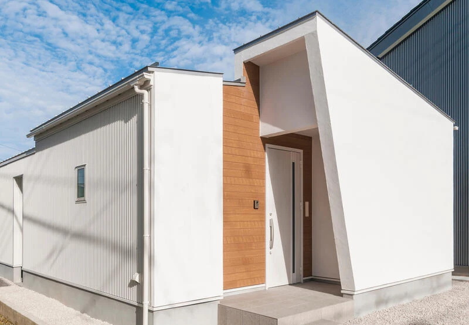
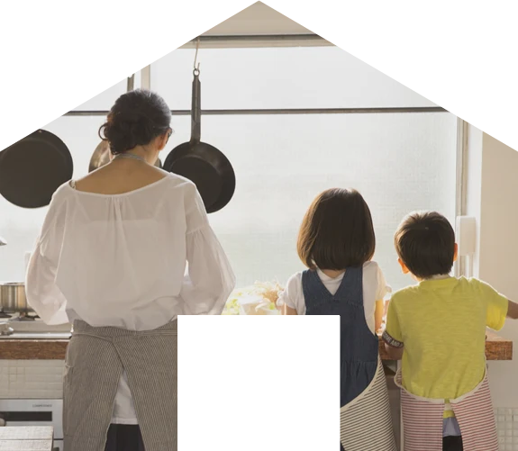

イベント情報
（終了しました）【Ainosリライフ】プロジェクト～築何年に見えますか？～
詳しいご案内
日程・価格・募集内容などは、掲載当時の情報です。
Before
～築53年の家～
After
～キッチン～
After～洗面所～
After～玄関～
築53年の木造建築がまるで
新築のように生まれ変わる

見どころポイント
もともと住んでいた家の隣の蔵の外観を生かし、格式あるお家に！

フジ創Ainos
の家づくりの特徴
家づくりの～4つの約束～
- ①
- 素材は健康に良い天然素材を多用します。
- ②
- 徹底的に無駄を省いて価格を安く提供します。
- ③
- お問合わせやお見積り後のしつこい売り込みは、一切ありません
- ④
- 家を建てた後のきめ細かいアフターサポート

空気のおいしい家
無垢の天然木のみを使用
我々の家づくりは、化学物質を
含む集成材を一切使いません。
我々の家づくりは
無垢の天然木のみを使用し、「本当に空気がおいしいです。」シロアリ対策も、抗菌性かつ防蟻性のある
無垢のヒノキを使用しています。
素足でも暖かい家
スリッパがいらない
無垢の天然木の温かみを感じる
家づくりが専門家だからこそ。


カビの生えない家
カビの生えない
家づくりへの挑戦
壁には、壁が呼吸できる
漆喰を使用しています。
漆喰は高アルカリ性でカビが
生存できない物質です。
理論的には百年たってもカビが
生えない家づくりは可能です。
創業して三十年たちますが、
カビは全く生えていません。


子供のための家
こどもの成長を一番に
天然素材の健康住宅。
自分が住みたくない家を建てたくない。
私たちはそんな想いから家族にとって
快適で安全な暮らしの空間、
「漆喰や無垢材を使った家」を
納得の価格でご提供いたします。
これからの人生を育んでいく、
あなたの大切な家族のために、
私たちのつくる家をご体感ください。
開催概要
- 開催日時
- 2025年1月11日（土）, 12日（日）, 13日（月・祝）
- 住所
- 富山県砺波市柳瀬
※詳しい住所はご予約の方にお伝えします。
- 電話
- 0800-200-2661(フリーダイヤル)
〇ご相談会随時受付中
ご予約フォームから「お問合せ内容」欄にご希望の日時をご入力ください。